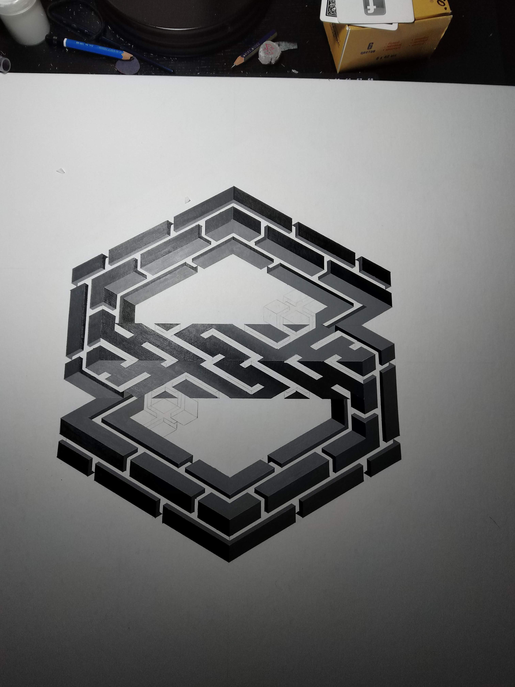
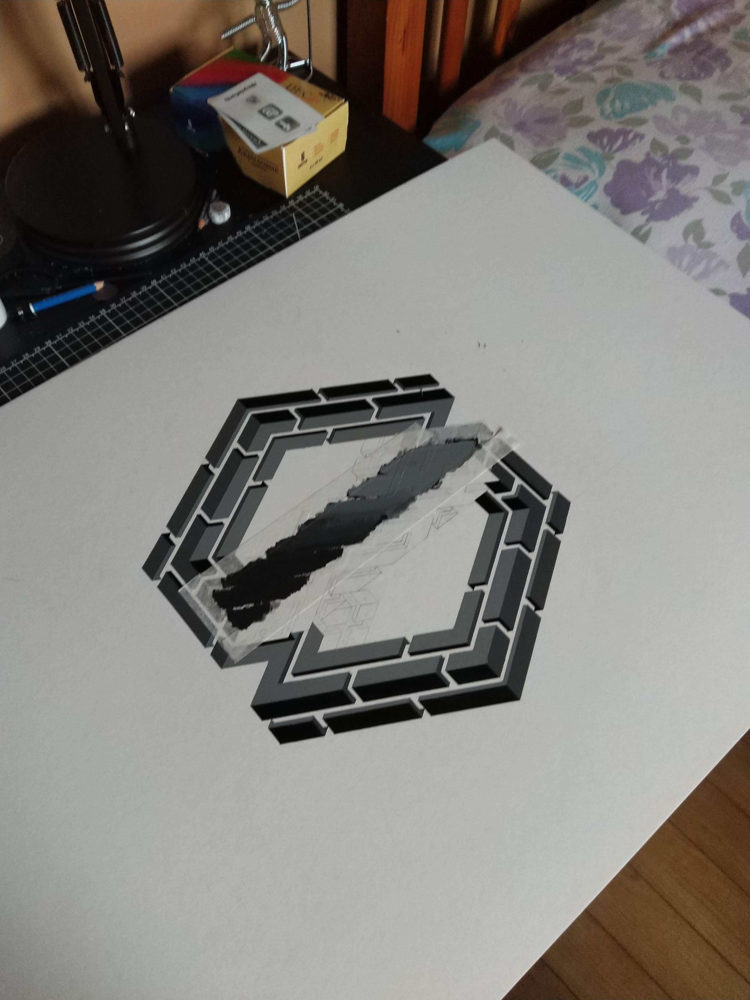
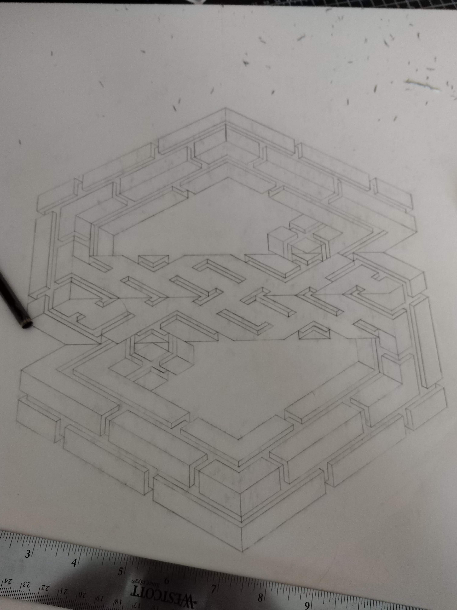
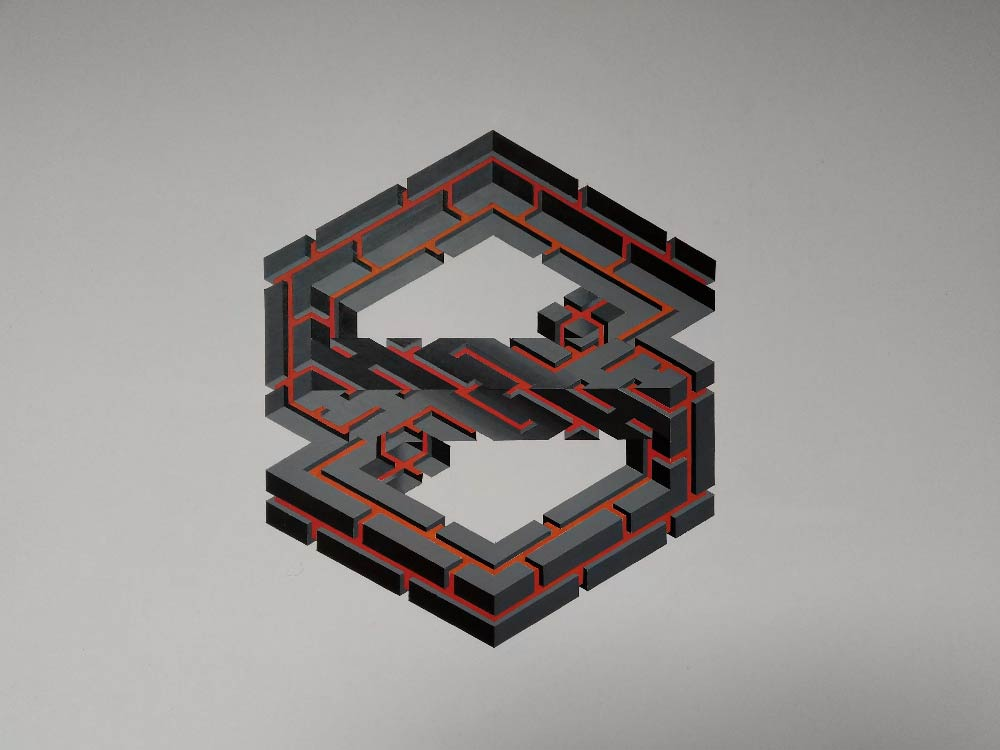
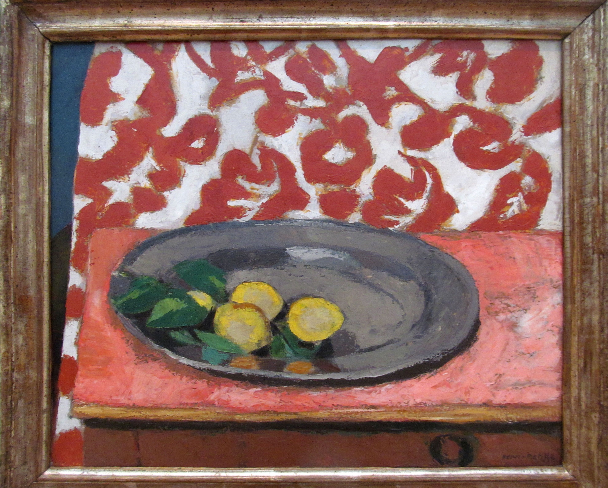
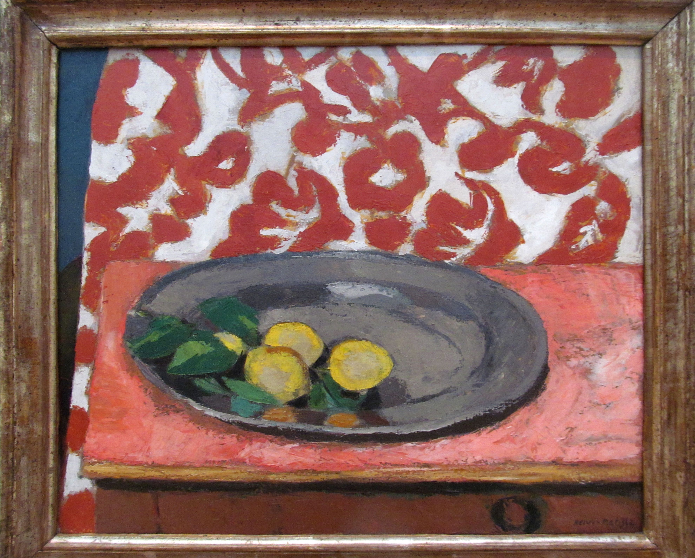
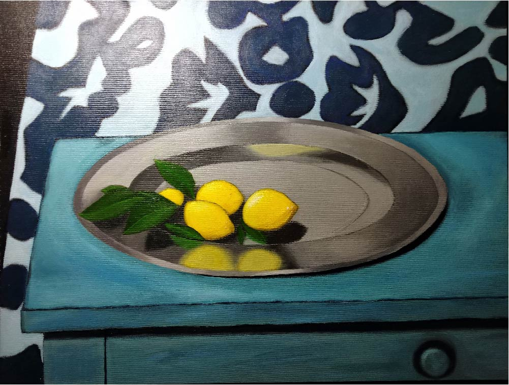

Painting Projects
Painting is something I did when I was little, I even took weekly classes, but it never really followed me. The skill was mostly acquired through my college journey. Similar to drawing, I learned about visualization, sizing, lighting, shadows, types of strokes, color pallets, and more. At the end of it all, I understood that the final product is less about detail and more about getting the feel of the scene. There is more to come!




My Logo
This is a painting of my main logo. The main shape/idea came to me in 2016, but I didn't follow up with a full project.
But after my college painting class, I decided to come back to the logo idea with newfound skills.
I changed the design and settled on making this a painting. Of course, to make this as precise as possible, considering the constraints of the canvas size,
I had to use masking tape around the pencil lines. The part I enjoyed the most, was the middle part, where I blended the different shades of grey.
Size: 30" x 40"
Date: 2019
 


Lemons on a Pewter (Matisse)
This is a personal recreation of a painting by Henri Matisse "Lemons on a Pewter Plate", 1926.
This is my first painting in the last 10 years, and throughout the whole process, I've improved a lot. I love the metal texture
I got from the plate and the lemon roundness and fullness that I achieved.
Size: 18" x 24"
Date: 2017


Red Crumpled Paper
The painting was a recreation of a piece of paper that I've crumpled.
This painting made me improve my stroke precision, because of the hard edges.
Also, the important transitions from light to shadow made me more meticulous when blending colors.
The piece required a lot of retouching, but I think it turned out good.
Size: 18" x 24"
Date: 2017